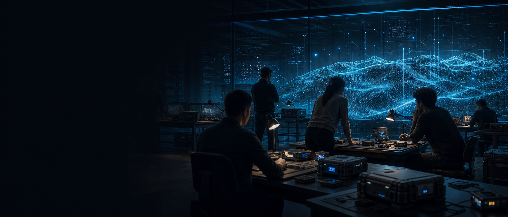
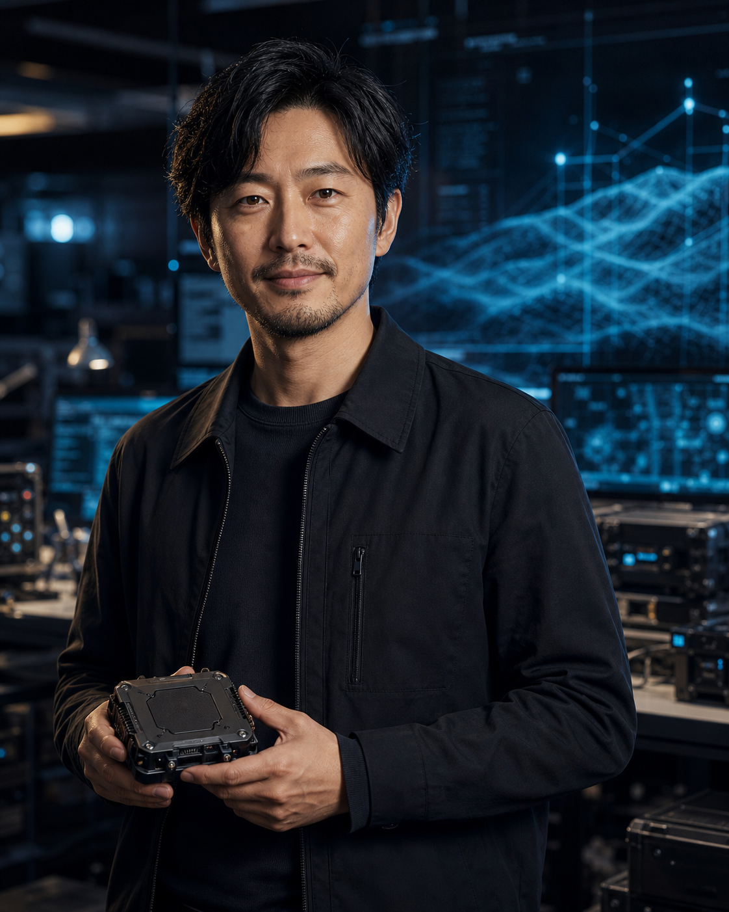

エッジAIエンジニア
低遅延推論、モデル最適化、センサー処理基盤の開発。

Careers
TERRAPHASE は、防衛・重要インフラの課題に向き合うディープテックチームです。研究と実装の距離を縮め、現場で動くプロダクトを一緒につくる仲間を探しています。
01Why Join
通信が途切れる場所、点検できない構造物、複数の情報が矛盾する現場。私たちは、こうした不確実性の高い環境で、人の判断を支える技術を開発しています。
研究成果を論文の中だけで終わらせず、ハードウェア、ソフトウェア、運用設計までつなげることを重視します。
02Open Roles
低遅延推論、モデル最適化、センサー処理基盤の開発。
メッシュ通信、デバイス制御、現場検証環境の構築。
センサーフュージョン、自律制御、異常検知アルゴリズムの研究開発。
03People

Edge AI Lead
前職では製造現場向けの画像認識モデルを開発。TERRAPHASE では、通信が不安定な環境でも動き続ける推論基盤を担当しています。研究コードを現場で使える速度・消費電力・堅牢性まで落とし込むところに、いちばん面白さを感じています。
「完璧な環境ではなく、制約だらけの現場で動くものをつくる。そこにエンジニアリングの濃さがあります。」
Sensor Fusion Lead
大学院ではロボティクスと時系列解析を研究。現在は、光学・レーダー・振動データを統合し、単一センサーでは見えない異常や兆候を捉えるアルゴリズムを開発しています。専門の違うメンバーと一緒に仮説を検証し、プロダクトに反映するスピードが魅力です。
「データの奥にある現場の変化を、どうすれば人が判断できる形にできるか。毎日その問いに向き合っています。」
Contact